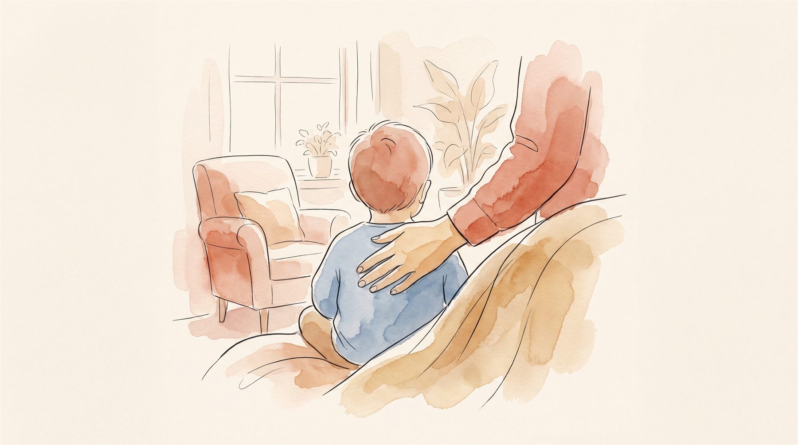

아이 기질검사(TCI), 꼭 받아야 할까?
— 임상심리전문가가 정리한 판단 기준

아동·청소년 임상심리 전공
모든 아이가 기질검사를 받아야 하는 건 아닙니다. 다만 ‘분명 좋다는 방법을 다 써봤는데 우리 아이에게만 안 통한다’가 반복된다면, 훈육법을 또 바꾸기 전에 기질을 먼저 확인하는 편이 나아요. 기질은 고쳐야 할 문제가 아닙니다. 양육의 방법을 맞추는 기준이거든요.
“남의 집 아이에게 통한 그 방법이, 왜 우리 아이에겐 안 통할까.” 상담실에서 부모님들께 가장 자주 듣는 말입니다. 아이가 게을러서도, 부모가 잘못 키워서도 아닌 경우가 대부분이에요. 방법이 우리 아이한테 안 맞았을 뿐이지요. 기질검사는 우리 아이한테 맞는 방법을 찾는 첫 단추입니다.
기질검사(TCI)란 무엇인가요?
TCI(기질 및 성격검사)는 정신과 의사 로버트 클로닌저의 이론을 바탕으로, 타고난 기질을 네 축으로 재는 표준화 심리검사입니다. 각 축은 이렇게 읽어요.
이 네 축의 조합이 우리 아이가 원래 어떤 아이인지 보여 줍니다. 중요한 건, 기질에 좋고 나쁨이 없다는 점이에요. 예를 들어 위험회피가 높으면 ‘겁이 많다’기보다 ‘신중하다’로 읽어요. 자극추구가 높으면 ‘산만하다’기보다 ‘탐험적이다’로 보고요.
산만한 게 기질 문제일까요, 버릇 문제일까요?
가장 많이 받는 질문이에요. 둘을 가르는 실마리는 세 가지입니다.
- 시작 시점 — 기질에서 온 행동은 아주 어릴 때부터 일관되게 나타납니다. 최근에 갑자기 생겼다면 환경·습관 쪽을 먼저 봐요.
- 상황의 폭 — 기질은 집·학교·학원 어디서나 두루 보입니다. 특정 상황에서만 나온다면 그 상황이 원인일 때가 많아요.
- 훈육 반응 — 기질에서 온 행동은 혼내도 잘 바뀌지 않습니다. 이걸 억지로 고치려 들면 아이도 부모도 지치지요.
이 둘을 섞어버리면 기질을 훈육으로 고치려다 매일 부딪힙니다. 먼저 구분하는 것만으로도 집안 공기가 한결 가라앉아요.
무료 온라인 성격테스트와 무엇이 다른가요?
MBTI풍 무료 테스트도 재미로는 좋습니다. 다만 같은 나이대 아이들과 비교한 백분위도, 신뢰도·타당도 검증도 없어요. TCI는 병원·학교·상담센터에서 실제로 쓰는 표준화 검사입니다. 규준집단 수천 명과 비교한 우리 아이의 위치를 알려주지요. 다만 숫자 그 자체보다, 그 숫자를 ‘우리 아이 이야기’로 옮기는 해석이 훨씬 중요해요. 이 이야기는 잠시 뒤에 다시 하겠습니다.
이럴 때 기질검사를 권합니다
- 좋다는 방법을 여러 번 바꿔봐도 계속 겉돌 때
- 같은 부모, 같은 양육인데 형제가 정반대로 반응할 때
- 아이를 볼 때 답답함·죄책감이 자주 올라올 때
- 진로·학습 방향을 아이의 타고난 성향에 맞춰 잡아주고 싶을 때
검사보다 ‘해석’이 결과를 가릅니다
결과지에 찍힌 ‘자극추구 92%’ 같은 숫자는 출발선일 뿐입니다. 그 숫자가 이 아이에게 어떤 말투·환경·학습법이 맞는지까지 옮겨져야, 검사가 일상을 바꿔요. 좋은 해석은 부모님을 가르치지 않습니다. 매일 아이를 보시는 부모님의 관찰에 검사라는 단서를 하나 얹어, 방향을 함께 잡을 뿐이지요.
기질은 바꾸는 대상이 아닙니다. 맞추는 기준이지요.
- Cloninger, C. R., Svrakic, D. M., & Przybeck, T. R. (1993). A psychobiological model of temperament and character. Archives of General Psychiatry, 50(12), 975–990.
- Thomas, A., & Chess, S. (1977). Temperament and development. Brunner/Mazel.
자주 묻는 질문
기질검사는 몇 살부터 받을 수 있나요?
결과가 ‘나쁘게’ 나올까 걱정돼요.
검사만 따로 받을 수도 있나요?
결과지 한 장을, ‘우리 아이 설명서’ 한 권으로.
마음기록소는 아이의 기질·흥미와 부모님의 기질·양육을 임상심리전문가가 풀어, 아이 이름이 박힌 맞춤 책 한 권으로 만들어 드립니다.
받게 되는 결과물 보기 →